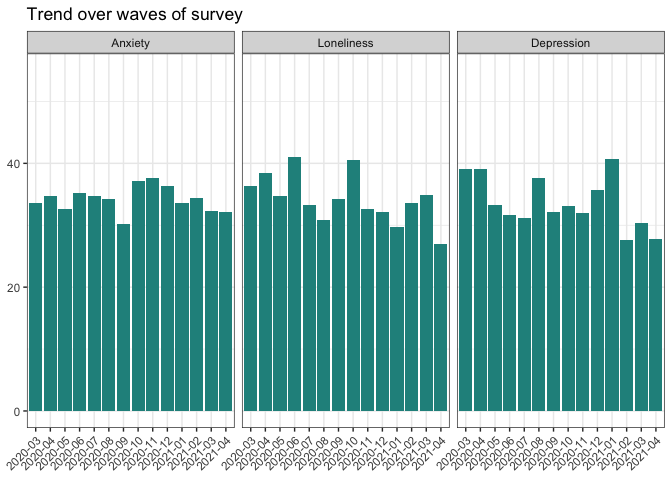

The goal of iCAREstudy package is to simplify and standardize the descriptive data analysis and outputs for the iCARE Study from Montreal Behavioural Medicine Centre (MBMC). You can read more about the overarching study at: www.iCareStudy.com.
You can install the development version of iCAREstudy from here:
# install.packages("devtools")
devtools::install_github("kosirurska/iCAREstudy")There are currently 3.5 functions available. Two are plotting functions that are commonly used to represent the trend in a variable over time, and a pie chart for showing proportions.
A unique feature of the plotting functions is that they allow the user to request the output to be a plot (as specified in the pkg with limited ability to manipulate the output e.g. color), or data, which summarizes the needed counts and proportions so that the user can develop their own graph using a different software.
The data
The examples are based on a fabricated data set included in this package. The data contains the same variable names as the original study in order to help users orient themselves. The complete data dictionaries are available at: https://osf.io/v8xk5/.
library(iCAREstudy)
library(tidyverse) # for now the functions still require the user to load tidyverse
#> ── Attaching packages ─────────────────────────────────────── tidyverse 1.3.0 ──
#> ✓ ggplot2 3.3.3 ✓ purrr 0.3.4
#> ✓ tibble 3.1.0 ✓ dplyr 1.0.5
#> ✓ tidyr 1.1.3 ✓ stringr 1.4.0
#> ✓ readr 1.4.0 ✓ forcats 0.5.1
#> ── Conflicts ────────────────────────────────────────── tidyverse_conflicts() ──
#> x dplyr::filter() masks stats::filter()
#> x dplyr::lag() masks stats::lag()
iCARE
#> # A tibble: 2,000 x 19
#> startdate wave startlanguage sex age_yrs edu concern_sq001
#> <date> <dbl> <chr> <dbl> <dbl> <dbl> <dbl>
#> 1 2021-03-01 1 it 1 36 3 1
#> 2 2020-04-01 1 fr 1 85 3 3
#> 3 2020-07-01 6 es 1 41 2 2
#> 4 2020-04-01 1 de 1 76 5 2
#> 5 2020-06-01 1 it 1 58 2 2
#> 6 2020-12-01 2 en 2 37 3 NA
#> 7 2020-03-01 2 en 1 51 2 2
#> 8 2020-10-01 3 en 1 59 4 1
#> 9 2020-06-01 1 es 3 46 4 2
#> 10 2020-10-01 1 it 1 40 4 1
#> # … with 1,990 more rows, and 12 more variables: concern_sq002 <dbl>,
#> # concern_sq003 <dbl>, concern_sq004 <dbl>, concern_sq005 <dbl>,
#> # impacvd_sq001 <dbl>, impacvd_sq002 <dbl>, impacvd_sq003 <dbl>,
#> # impacvd_sq004 <dbl>, hecond_sq001 <dbl>, hecond_sq002 <dbl>,
#> # hecond_sq003 <dbl>, month <chr>Because the data come from an ongoing multiwave survey, plotting trends over time is of interest. This function allows you to specify several variables, which you want to explore - be it by month, or survey wave. The function allows for filtering of the response category.
## An example:
plot_time_trend(data = iCARE,
variables = c(impacvd_sq003, impacvd_sq001, impacvd_sq002),
filter_value = 1,
time_variable = month, # test out for month if you wish
var_names = c("impacvd_sq003" = "Depression",
"impacvd_sq001" = "Anxiety",
"impacvd_sq002" = "Loneliness"),
max_value = 55,
title = "Trend over waves of survey",
return = "plot")
Another visualisation that has been commonly used to offer insight into data to the wider public are pie charts. This function allows the user to plot a single variable and select which categories they want plotted.
## Example pie
plot_pie_chart(data = iCARE,
variable = sex,
filter_response=c(1:2), # e.g. if you change to c(1:3) you include "Other"
title = "Sex distribution",
labels = c("Male", "Female"),
number_font_size = 6,
return = "plot")Simple line allows the user to get the proportion of missingness for each variable. The user can filter for the variable of interest.
## EXAMPLE
inspect_missing(iCARE)
#> Showing proportion of missing values in descending order above the level of: 0.
#> concern_sq004 concern_sq003 concern_sq005 concern_sq001 concern_sq002
#> 0.12 0.12 0.11 0.11 0.11
#> hecond_sq003 hecond_sq001 hecond_sq002 edu age_yrs
#> 0.10 0.10 0.09 0.09 0.02
## if you want it filtered eg for wave 8
inspect_missing(iCARE,
filter_var = "wave",
filter_value = 8)
#> Showing proportion of missing values in descending order above the level of: 0.
#> concern_sq004 concern_sq003 concern_sq005 concern_sq001 concern_sq002
#> 0.12 0.12 0.11 0.11 0.11
#> hecond_sq003 hecond_sq001 hecond_sq002 edu age_yrs
#> 0.10 0.10 0.09 0.09 0.02